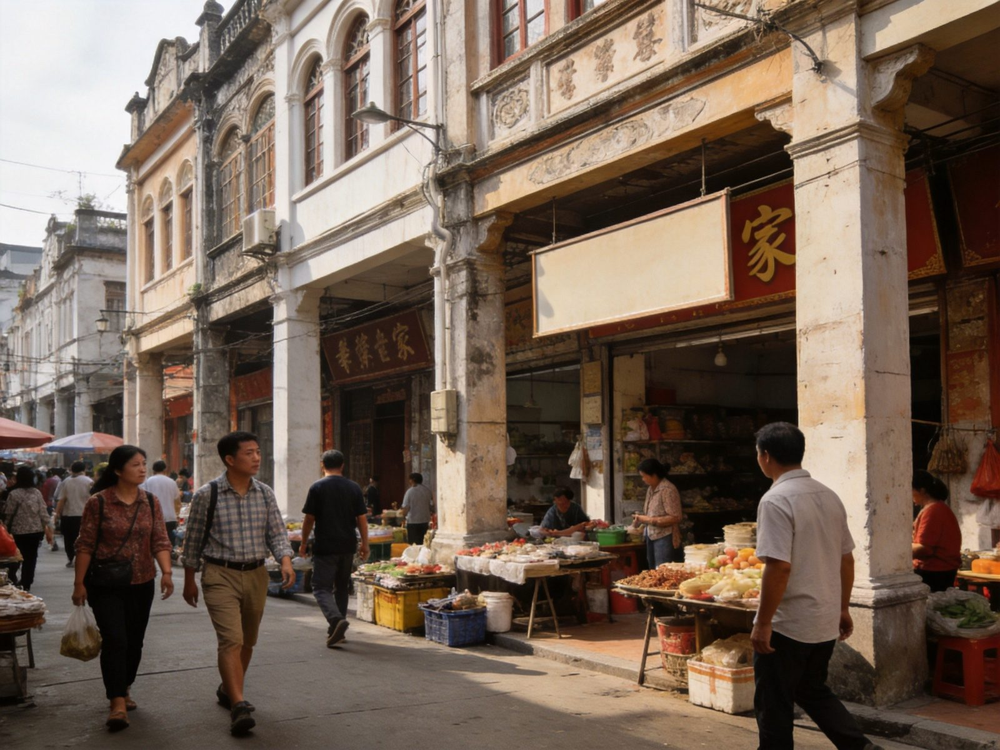

封面
总览
行前准备
Day1 椰林
Day2 航天
Day3 老街
美食清单
组合·贴士
安全提示
WENCHANG · 文昌
航天 · 椰乡
文昌 · 椰林 · 月亮湾 · 火箭
航天发射场
东郊椰林
月亮湾
文昌鸡
糟粕醋
2–3 天 · A5 手册 · 亲子/航天迷/海岛风
1
/ 9
文昌
动线总览
3 天怎么玩
Route Overview
Day 1
椰林
东郊椰林 · 月亮湾
东郊椰林椰海漫步 → 月亮湾踏浪 → 海边日落
Day 2
航天
航天发射场半日
文昌航天发射场参观 → 航天科普 → 返程顺路老街
Day 3
老街
文昌老街 · 返程
文昌老街骑楼 → 文昌鸡午餐 → 返程/转海口
TIP
椰林海滩与航天城
分天安排
更顺；两天可砍掉老街，专注椰林+航天两大主题。
TIP
🎫 椰子大观园/航天发射场参观按当地预约与票价为准，发射日需提前关注。
2
/ 9
文昌
行前准备
出发前，记住这 3 点
Before You Go
🏨 住哪最顺
城区（文城镇）
：逛老街、吃饭方便，
首推
清澜/东郊片区
：近椰林与海湾，度假感强
看海选月亮湾/高隆湾沿线海景民宿
🚄 怎么走
高铁
：从海口东/美兰约 40 分钟到文昌站
飞机
：海口美兰机场转高铁最方便
市内景点分散，
打车/包车
或环岛巴士最省心
🎒 必带
防晒、墨镜、泳衣、遮阳帽、舒适鞋
航天城与海滩都可能日晒，备足水
东郊椰林 · 椰海
3
/ 9
文昌
Day 1 · 椰林
Day 1 · 椰林
东郊椰林 · 月亮湾
东郊椰林
→
月亮湾
→
海边日落
🌴 东郊椰林
成片椰林沿"椰林大道"，风吹椰影，满眼青绿
适合漫步、拍照，椰子现开现饮超新鲜
🌙 月亮湾 / 高隆湾
月牙形的碧海湾，沙滩干净、海水澄澈
踏浪、捡贝壳、看日落，海边松弛半日
TIP
椰林和海湾都在东郊一带，
半天逛椰林、黄昏留海滩
最舒服；现开椰子记得及时喝。
月亮湾 · 月牙海湾
4
/ 9
文昌
Day 2 · 航天
Day 2 · 航天
文昌航天发射场
航天发射场
→
航天科普
→
顺路老街
🚀 文昌航天发射场
我国唯一的滨海航天发射场，火箭发射地标
可预约参观塔架、看科普馆，
航天迷必打卡
🔭 航天科普
近距离感受大国重器，涨知识又有仪式感
带娃亲子尤其推荐，寓教于乐
TIP
航天城参观
需提前预约
并关注开放时间；若遇发射日，务必按官方通告安排观看点。
TIP
🚆 顺路可乘高铁到海口，比自驾省心；航天城或老街备好半日。
5
/ 9
文昌
Day 3 · 老街
Day 3 · 老街
文昌老街 · 返程
文昌老街骑楼
→
文昌鸡午餐
→
返程
🏛 文昌老街
南洋骑楼老街，老字号与市井烟火并存
慢逛拍照，感受侨乡百年底子
🍗 文昌鸡
海南四大名菜之首，白切文昌鸡皮黄肉嫩
逛完老街用一顿地道文昌鸡收尾，满足
TIP
老街与航天城
顺路安排
（皆在城区一带）；返程留好去高铁/机场的时间。

文昌 · 南洋老街
6
/ 9
文昌
美食清单
文昌的味道
Wenchang Eats
🍗
文昌鸡
白切文昌鸡、椰子鸡汤 —— 四大名菜之首
🥣
糟粕醋
酸辣开胃的糟粕醋海鲜汤/粉 —— 本地特色
🍜
抱罗粉
抱罗粉、米粉 —— 早餐地道
🥥
椰子
现开椰子、椰子冻、椰汁 —— 椰乡必喝
🦐
海鲜
清蒸海鲜、白灼虾 —— 清澜/高隆湾渔港
🥭
水果
芒果、杨桃、菠萝蜜 —— 当季现切
TIP
文昌鸡认准
本地散养
老字号；糟粕醋口味偏酸辣，第一次可先小份试。
7
/ 9
文昌
组合 · 贴士
怎么串着玩
Combine & Tips
👨👩👧
亲子
航天城科普 + 东郊椰林捡椰子，寓教于乐最出彩
🔭
航天迷
发射场+科普馆为主，预留半天以上慢慢看
🚆
交通
城际高铁海口⇄文昌约40分钟；市内打车/包车衔接
🌙
时段
椰林与海滩上午不晒好逛，黄昏留月亮湾看落日
🔗
连玩
可串联
海口
或
万宁/三亚
环岛，高铁方便
TIP
文昌"一半椰风一半星辰"，
白天看海、傍晚看天
，慢下来才是椰乡正确打开方式。
8
/ 9
文昌
安全提示
看清这些，玩得更安心
Stay Safe
🏖
海边安全
看潮汐与警示，不逞强下水，看护好孩子
☀️
防晒
日晒强，定时补凃防晒、多喝水，避免正午暴晒
🔭
航天区
按参观指引走，勿越过警戒区，听从工作人员
🦐
消费
海鲜现点先问计价单位，留好凭证
⛈
天气
台风/雷雨季留意预报，海边与海上减少逗留
⚠️
紧急
紧急拨 110 / 120 / 119；游客中心可求助
椰风星辰「WorldStip」祝你玩得尽兴 🌴
9
/ 9
文昌 · 航天椰乡 2-3 日手册 · 由 WorldStip 定制
Insta360
记录美好
记录美好生活
相机指南 · CAMERA GUIDE